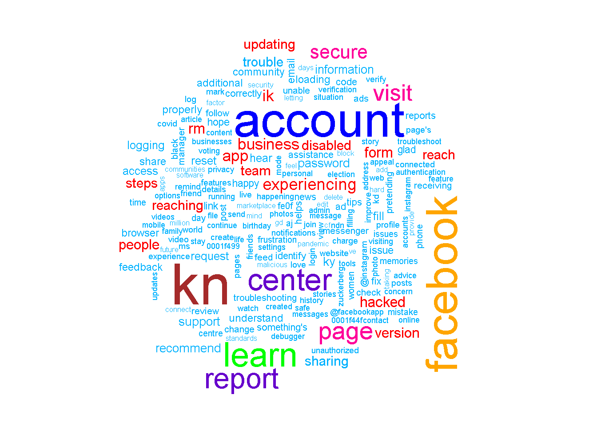
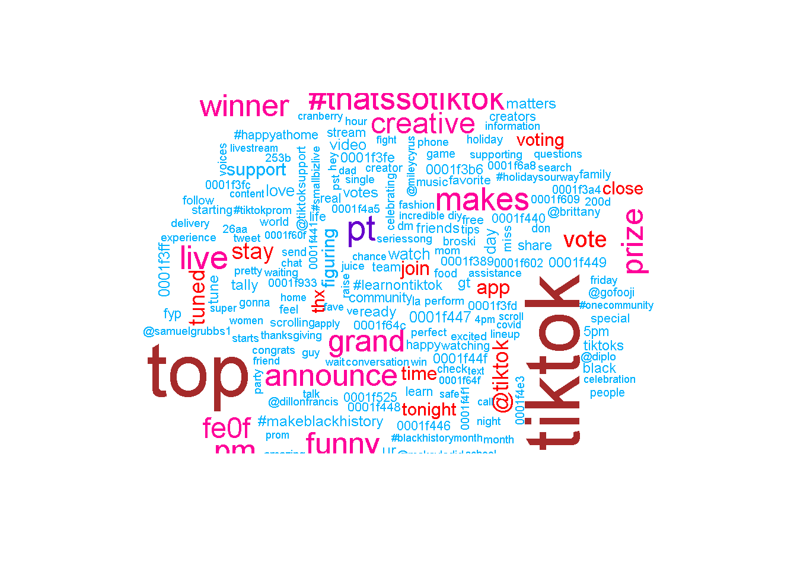
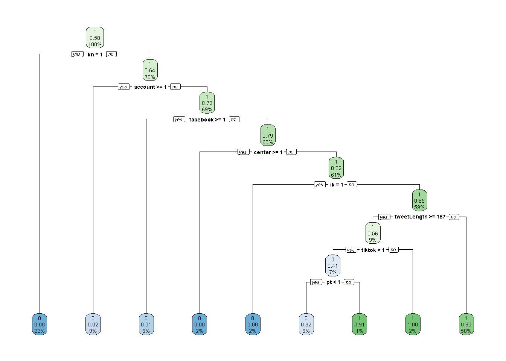
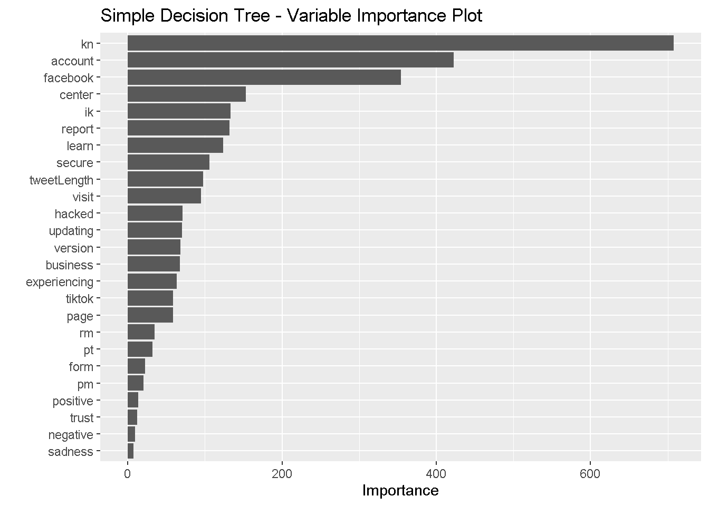
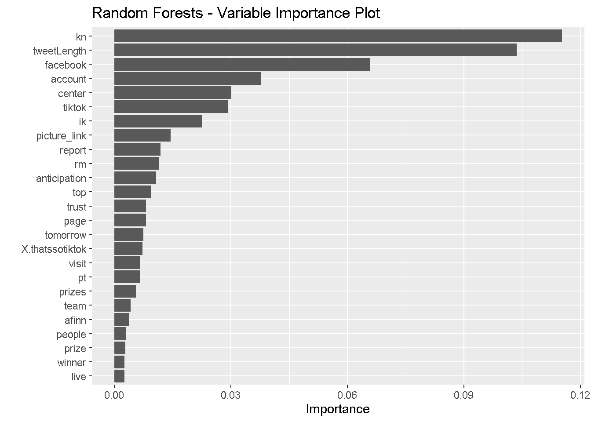
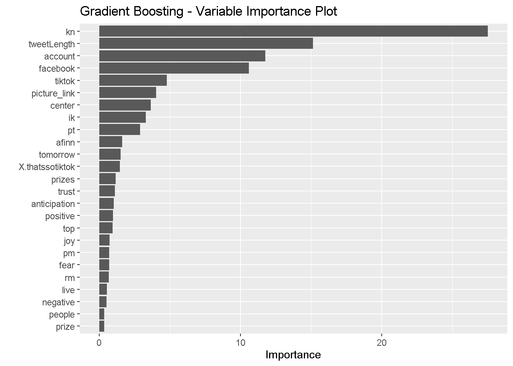

Homework 9 - Alligators
Ammar Plumber, Elaina Lin, Kim Nguyen, Meghan Aines, Ryan Karbowicz
4/13/2021
Introduction
We will be examining the difference in tweet communications between TikTok and Facebook. These are two popular social media platforms but with very different target audiences. Thus, the two brands may differ in their communication styles and language. We set out to identify the particular ways in which they differ and to build a model that can attribute each tweet to the correct user.
Preliminary Analysis
First, we import all non-base packages to be used in this analysis.
library(rtweet)
library(tidyverse)
library(lubridate)
library(scales)
library(tidytext)
library(wordcloud)
library(textdata)
library(caret) # for general model fitting
library(rpart) # for fitting decision trees
library(rpart.plot)
library(ipred) # for fitting bagged decision trees
library(ranger)
library(gbm)
library(vip)
library(kableExtra)
Now, we import the tweets that we pulled using the get_timeline() function and saved to a CSV file. There are ~3200 tweets from each user in our dataset.
# Run these two lines to get the tweets
# and then save them as a csv for future use
# tiktok <- get_timeline("tiktok_us", n=3200)
# tiktok %>% write_as_csv('tiktok.csv')
#
# facebook <- get_timeline("Facebook", n=3200)
# facebook %>% write_as_csv("facebook.csv")
tiktok <-
read_csv('tiktok.csv') %>%
select(status_id, source, text, created_at) %>%
as.data.frame()
facebook <-
read_csv('facebook.csv') %>%
select(status_id, source, text, created_at)
nrc <- read_rds("nrc.rds")
facebook %>% head()
## # A tibble: 6 x 4
## status_id source text created_at
## <chr> <chr> <chr> <dttm>
## 1 x13820200803434~ Twitter We~ "Ramadan Mubarak <U+0001F319>\n \nThis #MonthofGood, check out all the ~ 2021-04-13 17:17:18
## 2 x13817344290186~ Khoros CX "@MeenalK1 Hi Meenal. Do you have the reference numbers for your submit~ 2021-04-12 22:22:13
## 3 x13817333826320~ Khoros CX "@Afrojalipro Thanks for updating us, Afroj! We're so happy to hear tha~ 2021-04-12 22:18:04
## 4 x13817326683881~ Khoros CX "@CallandManning Hi Calland. If you do not have access to the phone num~ 2021-04-12 22:15:14
## 5 x13817113768763~ Khoros CX "@BHARTINANDAN4 Hello! Please visit this Help Center article if you are~ 2021-04-12 20:50:37
## 6 x13817105484761~ Khoros CX "@weathermatt22 Hi Matt. Please visit our Help Center to report an issu~ 2021-04-12 20:47:20
Now, for each user, we produce a line chart showing the percent of all tweets from each source by hour.
facebook %>%
count(source, hour = hour(with_tz(created_at, "EST"))) %>%
mutate(percent = n/sum(n)) %>%
ggplot(aes(x = hour, y = percent, color = source)) +
labs(x = "Hour of day (EST)", y = "% of tweets", color = "") +
scale_y_continuous(labels = percent_format()) +
geom_line() +
ggtitle('Facebook Source Breakdown by Hour')
tiktok %>%
count(source, hour = hour(with_tz(created_at, "EST"))) %>%
mutate(percent = n/sum(n)) %>%
ggplot(aes(x = hour, y = percent, color = source)) +
labs(x = "Hour of day (EST)", y = "% of tweets", color = "") +
scale_y_continuous(labels = percent_format()) +
geom_line() +
ggtitle('Tiktok Source Breakdown by Hour')
We see that the vast majority of Facebook’s tweets are put out using Khoros Publishing between the hours of 10 AM and 8 PM. TikTok publishes most of its tweets through the Twitter Web App and Fan Experiences Platform—usually between 10 AM and 8 PM, like Facebook.
We want to see if both users’ tweets tend to differ in length, so we create a histogram for each user.
fb_wordcounts <-
facebook %>%
mutate(tweetLength = str_length(text)) %>%
filter(tweetLength < 500)
tiktok_wordcounts <-
tiktok %>%
mutate(tweetLength = str_length(text)) %>%
filter(tweetLength < 500)
writeLines(c(paste0("Facebook Mean Tweet Length: ",
mean(fb_wordcounts$tweetLength)),
paste0("TikTok Mean Tweet Length: ",
mean(tiktok_wordcounts$tweetLength))))
## Facebook Mean Tweet Length: 163.289555972483
## TikTok Mean Tweet Length: 112.557921102066
hist(tiktok_wordcounts$tweetLength, main = "TikTok - Histogram of Tweet Lengths")
hist(fb_wordcounts$tweetLength, main = "Facebook - Histogram of Tweet Lengths")
As we see, TikTok’s tweet lengths are right-skewed, with most tweets being around 100 words long. Facebook, on the other hand, seems to post longer tweets, with a more normal distribution centered around 150 words long. Tweet length seems like a useful feature to include in our predictive model.
Next, we look at whether there is a difference in the share of Tweets that include pictures.
fb_picture_counts <-
facebook %>%
filter(!str_detect(text, '^"')) %>%
count(picture = ifelse(str_detect(text, "t.co"),
"Picture/link", "No picture/link"))
tiktok_picture_counts <-
tiktok %>%
filter(!str_detect(text, '^"')) %>%
count(picture = ifelse(str_detect(text, "t.co"),
"Picture/link", "No picture/link"))
fb_pct_pics <-
fb_picture_counts %>% filter(picture == "Picture/link") %>%
select(2) %>% as.numeric() / sum(fb_picture_counts$n) * 100
tiktok_pct_pics <-
tiktok_picture_counts %>% filter(picture == "Picture/link") %>%
select(2) %>% as.numeric() / sum(tiktok_picture_counts$n) * 100
cat(paste0("Percent of Tweets with pictures/link\n",
"\nFacebook: ", round(fb_pct_pics, 2),
"\nTikTok: ", round(tiktok_pct_pics, 2)))
## Percent of Tweets with pictures/link
##
## Facebook: 85.98
## TikTok: 52.33
~86% of Facebook’s tweets contain pictures/links, while only ~52% of TikTok’s tweets contain pictures/links. This could be another useful predictor to include in our model.
Sentiment Analysis
Now, we split the tweets into tokens so that we can perform sentiment analysis on them.
reg <- "([^A-Za-z\\d#@']|'(?![A-Za-z\\d#@]))"
# Unnest the text strings into a data frame of words
fb_words <-
facebook %>%
filter(!str_detect(text, '^"')) %>%
mutate(text = str_replace_all(text,
"https://t.co/[A-Za-z\\d]+|&",
"")) %>%
unnest_tokens(word, text,
token = "regex",
pattern = reg) %>%
filter(!word %in% stop_words$word,
str_detect(word, "[a-z]"))
tiktok_words <-
tiktok %>%
filter(!str_detect(text, '^"')) %>%
mutate(text = str_replace_all(text,
"https://t.co/[A-Za-z\\d]+|&",
"")) %>%
unnest_tokens(word, text,
token = "regex",
pattern = reg) %>%
filter(!word %in% stop_words$word,
str_detect(word, "[a-z]"))
# Inspect the first six rows of tweet_words
head(fb_words)
## # A tibble: 6 x 4
## status_id source created_at word
## <chr> <chr> <dttm> <chr>
## 1 x1382020080343470082 Twitter Web App 2021-04-13 17:17:18 ramadan
## 2 x1382020080343470082 Twitter Web App 2021-04-13 17:17:18 mubarak
## 3 x1382020080343470082 Twitter Web App 2021-04-13 17:17:18 0001f319
## 4 x1382020080343470082 Twitter Web App 2021-04-13 17:17:18 #monthofgood
## 5 x1382020080343470082 Twitter Web App 2021-04-13 17:17:18 check
## 6 x1382020080343470082 Twitter Web App 2021-04-13 17:17:18 kindness
We produce two horizontal bar graphs that show the most common words along with a wordcloud for each user.
fb_words %>%
count(word, sort = TRUE) %>%
head(20) %>%
mutate(word = reorder(word, n)) %>%
ggplot(aes(x = word, y = n)) +
geom_bar(stat = "identity") +
ylab("Occurrences") +
coord_flip() +
ggtitle("Facebook Word Frequency")
tiktok_words %>%
count(word, sort = TRUE) %>%
head(20) %>%
mutate(word = reorder(word, n)) %>%
ggplot(aes(x = word, y = n)) +
geom_bar(stat = "identity") +
ylab("Occurrences") +
coord_flip() +
ggtitle("TikTok Word Frequency")
facebook_cloud <-
fb_words %>%
count(word) %>%
arrange(-n)
wordcloud(facebook_cloud$word,
facebook_cloud$n, max.words = 200,
colors = c("#00B2FF", "red",
"#FF0099", "#6600CC",
"green", "orange",
"blue", "brown"))

tiktok_cloud <-
tiktok_words %>%
count(word) %>%
arrange(-n)
wordcloud(tiktok_cloud$word,
tiktok_cloud$n, max.words = 200,
colors = c("#00B2FF", "red",
"#FF0099", "#6600CC",
"green", "orange",
"blue", "brown"))

We join the NRC Word-Emotion Association Lexicon to our data, which will allow us to identify words associated with eight basic emotions (anger, fear, anticipation, trust, surprise, sadness, joy, and disgust) and two sentiments (negative and positive).
fb_sentiment <-
inner_join(fb_words, nrc, by = "word")
tiktok_sentiment <-
inner_join(tiktok_words, nrc, by = "word")
fb_sentiment %>% head()
## # A tibble: 6 x 5
## status_id source created_at word sentiment
## <chr> <chr> <dttm> <chr> <chr>
## 1 x1382020080343470082 Twitter Web App 2021-04-13 17:17:18 kindness positive
## 2 x1381733382632001536 Khoros CX 2021-04-12 22:18:04 happy anticipation
## 3 x1381733382632001536 Khoros CX 2021-04-12 22:18:04 happy joy
## 4 x1381733382632001536 Khoros CX 2021-04-12 22:18:04 happy positive
## 5 x1381733382632001536 Khoros CX 2021-04-12 22:18:04 happy trust
## 6 x1381733382632001536 Khoros CX 2021-04-12 22:18:04 wonderful joy
Here, we compare Facebook’s and TikTok’s sentiments.
fb_sentiment_analysis <-
fb_sentiment %>%
count(word, sentiment) %>%
group_by(sentiment)
fb_sentiment_analysis %>%
top_n(15) %>%
ggplot(aes(x = sentiment, y = n )) +
geom_bar(stat = "identity") +
coord_flip() +
ylab("Frequency") +
xlab("Sentiment") +
labs(title="Facebook Sentiment")
tiktok_sentiment_analysis <-
tiktok_sentiment %>%
count(word, sentiment) %>%
group_by(sentiment)
tiktok_sentiment_analysis %>%
top_n(15) %>%
ggplot(aes(x = sentiment, y = n )) +
geom_bar(stat = "identity") +
coord_flip() +
ylab("Frequency") +
xlab("Sentiment") +
labs(title="TikTok Sentiment")
It looks like Facebook’s tweets use more trust words while TikTok uses more words that reflect anticipation. We now show specifically which words are conveying each of these observed sentiments.
fb_sentiment_analysis %>% filter(!sentiment %in% c("positive", "negative")) %>%
mutate(sentiment = reorder(sentiment, -n),
word = reorder(word, -n)) %>% top_n(10) -> fb_sentiment_analysis2
ggplot(fb_sentiment_analysis2, aes(x=word, y=n, fill = n)) +
facet_wrap(~ sentiment, scales = "free")+
geom_bar(stat ="identity") +
theme(axis.text.x = element_text(angle = 90, hjust = 1)) +
labs(y="count", title="Facebook Sentiment Words")
tiktok_sentiment_analysis %>% filter(!sentiment %in% c("positive", "negative")) %>%
mutate(sentiment = reorder(sentiment, -n),
word = reorder(word, -n)) %>% top_n(10) -> tiktok_sentiment_analysis2
ggplot(tiktok_sentiment_analysis2, aes(x=word, y=n, fill = n)) +
facet_wrap(~ sentiment, scales = "free")+
geom_bar(stat ="identity") +
theme(axis.text.x = element_text(angle = 90, hjust = 1)) +
labs(y="count", title="Tik Tok Sentiment Words")

Next, we examine texts on Facebook and Tiktok to see their positive-negative score by using the AFINN sentiment lexicon, a list of English terms manually rated for valence with an integer between -5 (negative) and +5 (positive) by Finn Årup Nielsen between 2009 and 2011.
We use this lexicon to compute mean positivity scores for all words tweeted by each user.
# run this to get afinn lexicon and save it as a csv
# get_sentiments ("afinn") -> afinn
#
#afinn %>% write_as_csv("afinn.csv")
afinn <- read_csv('afinn.csv')
fb_afinn <-
inner_join(fb_words,
afinn,
by = "word")
tiktok_afinn <-
inner_join(tiktok_words,
afinn,
by = "word")
fb_mean_afinn <-
fb_afinn %>%
summarise(mean_fb_afinn = mean(value))
tiktok_mean_afinn <-
tiktok_afinn %>%
summarise(mean_tt_afinn = mean(value))
cat(paste0("Average AFINN scores for all words by user\n",
"\nFacebook: ", round(fb_mean_afinn, 3),
"\nTikTok: ", round(tiktok_mean_afinn, 3)))
## Average AFINN scores for all words by user
##
## Facebook: 0.785
## TikTok: 1.704
Facebook’s mean AFINN value is 0.79 while TikTok’s mean AFINN value is 1.704. In general, words tweeted by Tiktok are more positive than those tweeted by Facebook.
Training Predictive Models
Here, using the text of a tweet, we attempt to predict the user who tweeted it.
The features we extracted are tweet length, the presence of a picture/link, number of words for each sentiment, and mean AFINN score per tweet.
TikTok is encoded as 1, and Facebook is encoded as 0.
First, we produce a simple decision tree.
fb_piclinks <-
facebook %>%
filter(!str_detect(text, '^"')) %>%
mutate(picture_link = ifelse(str_detect(text, "t.co"),
1, 0)) %>%
select(1,5)
tiktok_piclinks <-
tiktok %>%
filter(!str_detect(text, '^"')) %>%
mutate(picture_link = ifelse(str_detect(text, "t.co"),
1, 0)) %>%
select(1,5)
fb_tweet_afinn <-
fb_afinn %>%
group_by(status_id) %>%
summarize(afinn = mean(value))
tiktok_tweet_afinn <-
tiktok_afinn %>%
group_by(status_id) %>%
summarize(afinn = mean(value))
fb_sentiment_counts <-
fb_sentiment %>%
group_by(status_id) %>%
count(sentiment) %>%
ungroup() %>%
pivot_wider(id_cols = status_id,
names_from = sentiment,
values_from = n,
values_fill = 0)
tiktok_sentiment_counts <-
tiktok_sentiment %>%
group_by(status_id) %>%
count(sentiment) %>%
ungroup() %>%
pivot_wider(id_cols = status_id,
names_from = sentiment,
values_from = n,
values_fill = 0)
tiktok_feature_selection <-
tiktok_wordcounts %>%
mutate(user = 1) %>%
left_join(tiktok_sentiment_counts,
by="status_id") %>%
left_join(tiktok_tweet_afinn,
by="status_id") %>%
left_join(tiktok_piclinks,
by="status_id")
facebook_feature_selection <-
fb_wordcounts %>%
mutate(user = 0) %>%
left_join(fb_sentiment_counts,
by="status_id") %>%
left_join(fb_tweet_afinn,
by="status_id") %>%
left_join(fb_piclinks,
by="status_id")
both_users <-
tiktok_feature_selection %>%
rbind(facebook_feature_selection) %>%
mutate_if(is.numeric,coalesce,0)
set.seed(123)
index <-
createDataPartition(both_users$user,
p = 0.8, list = FALSE)
for_decisiontree <-
both_users %>% select(-1,-2,-3,-4) %>%
drop_na()
train <- for_decisiontree[index, ]
test <- for_decisiontree[-index, ]
set.seed(123)
simple_model <- rpart(user ~ .,
data = train, method = "class")
rpart.plot(simple_model, yesno = 2)

We produce additional models using the bagging, random forests, and gradient boosting methods.
set.seed(123)
bagging_model <- train(
user ~ .,
data = train,
method = "treebag",
trControl = trainControl(method = "oob"),
keepX = T,
nbagg = 100,
importance = "impurity",
control = rpart.control(minsplit = 2, cp = 0)
)
n_features <- length(setdiff(names(train), "user"))
train$user <- as.factor(train$user)
rf_model <- ranger(
user ~ .,
data = train,
mtry = floor(n_features * 0.5),
respect.unordered.factors = "order",
importance = "permutation",
seed = 123
)
set.seed(123) # for reproducibility
train$user <- as.numeric(train$user)-1
gbm_model <- gbm(
formula = user ~ .,
data = train,
distribution = "gaussian", # SSE loss function
n.trees = 1000,
shrinkage = 0.05,
interaction.depth = 5,
n.minobsinnode = 4,
cv.folds = 10
)
We also display four variable importance plots to see which variables each model identified as significant.
vip(simple_model, num_features = 30) +
ggtitle('Simple Decision Tree - Variable Importance Plot')

vip(bagging_model, num_features = 30) +
ggtitle('Bagging - Variable Importance Plot')

vip(rf_model, num_features = 30) +
ggtitle('Random Forests - Variable Importance Plot')

vip(gbm_model, num_features = 30) +
ggtitle('Gradient Boosting - Variable Importance Plot')

It seems that the simple decision tree placed the most importance on the presence of a picture/link. The bagging model, on the other hand places no importance on this variable. All four methods identified tweet length as strongly predictive of the user. All four heavily weighted anticipation sentiments and AFINN scores.
Results and Discussion
Now, I produce confusion matrices and show residual sum of squares for all tree-based methods—first evaluating their performance on the training set and then on the test set. Note again that a Tiktok tweet is encoded as 1, and a Facebook tweet is encoded as 0. The code is shown for the first matrix but not for subsequent ones for the sake of elegance.
Training Set Performance
Simple Decision Tree - Training Set:
## [1] 1 0
## Levels: 0 1
## Confusion Matrix and Statistics
##
## Reference
## Prediction 0 1
## 0 2209 574
## 1 338 1993
##
## Accuracy : 0.8217
## 95% CI : (0.8109, 0.8321)
## No Information Rate : 0.502
## P-Value [Acc > NIR] : < 2.2e-16
##
## Kappa : 0.6435
##
## Mcnemar's Test P-Value : 7.16e-15
##
## Precision : 0.7937
## Recall : 0.8673
## F1 : 0.8289
## Prevalence : 0.4980
## Detection Rate : 0.4320
## Detection Prevalence : 0.5442
## Balanced Accuracy : 0.8218
##
## 'Positive' Class : 0
##
Bagging Method - Training Set:
## Confusion Matrix and Statistics
##
## Reference
## Prediction 0 1
## 0 2462 59
## 1 85 2508
##
## Accuracy : 0.9718
## 95% CI : (0.9669, 0.9762)
## No Information Rate : 0.502
## P-Value [Acc > NIR] : < 2e-16
##
## Kappa : 0.9437
##
## Mcnemar's Test P-Value : 0.03722
##
## Precision : 0.9766
## Recall : 0.9666
## F1 : 0.9716
## Prevalence : 0.4980
## Detection Rate : 0.4814
## Detection Prevalence : 0.4930
## Balanced Accuracy : 0.9718
##
## 'Positive' Class : 0
##
Random Forests Method - Training Set:
## Confusion Matrix and Statistics
##
## Reference
## Prediction 0 1
## 0 2429 106
## 1 118 2461
##
## Accuracy : 0.9562
## 95% CI : (0.9502, 0.9616)
## No Information Rate : 0.502
## P-Value [Acc > NIR] : <2e-16
##
## Kappa : 0.9124
##
## Mcnemar's Test P-Value : 0.4624
##
## Precision : 0.9582
## Recall : 0.9537
## F1 : 0.9559
## Prevalence : 0.4980
## Detection Rate : 0.4750
## Detection Prevalence : 0.4957
## Balanced Accuracy : 0.9562
##
## 'Positive' Class : 0
##
Gradient Boosting Method - Training Set:
## Using 979 trees...
## Confusion Matrix and Statistics
##
## Reference
## Prediction 0 1
## 0 2311 282
## 1 236 2285
##
## Accuracy : 0.8987
## 95% CI : (0.8901, 0.9068)
## No Information Rate : 0.502
## P-Value [Acc > NIR] : < 2e-16
##
## Kappa : 0.7974
##
## Mcnemar's Test P-Value : 0.04802
##
## Precision : 0.8912
## Recall : 0.9073
## F1 : 0.8992
## Prevalence : 0.4980
## Detection Rate : 0.4519
## Detection Prevalence : 0.5070
## Balanced Accuracy : 0.8987
##
## 'Positive' Class : 0
##
Performance Summary and RSS
|
type
|
total_errors
|
accuracy
|
|
Simple
|
912
|
0.8216660
|
|
Bagging
|
144
|
0.9718420
|
|
Random Forests
|
224
|
0.9561987
|
|
Gradient Boosting
|
518
|
0.8987094
|
The rankings for accuracy on the training set are as follows: 1. Bagging method 2. Random forests 3. Gradient boosting method 4. Simple decision tree
We show the residual sum of squares for all four models on the training set below.
rss_simple_train <- sum((actual_train-simple_pred_train)^2)
rss_bagging_train <- sum((actual_train-bagging_pred_train)^2)
rss_rf_train <- sum((actual_train-rf_pred_train)^2)
rss_gb_train <- sum((actual_train-gb_pred_train)^2)
cat(paste0("Residual Sum of Squares on Training Set\n",
"\nSimple model: ", rss_simple_train,
"\nBagging model: ", rss_bagging_train,
"\nRandom forests model: ", rss_rf_train,
"\nGradient boosting model: ", rss_gb_train))
## Residual Sum of Squares on Training Set
##
## Simple model: 743.785102129366
## Bagging model: 147.807476444236
## Random forests model: 224
## Gradient boosting model: 390.0864919704
The bagging model performed the best on the training set, followed by the random forests method, the gradient boosting method, and the simple model in last place.
Now, we show confusion matrices for the test set.
Test Set Performance
Simple Decision Tree - Test Set:
actual_test <- test$user
simple_pred_test <-
predict(simple_model, newdata = test) %>%
as_tibble() %>%
select(2) %>%
unlist() %>%
as.vector()
simple_test_confusion <-
confusionMatrix(data = factor(round(simple_pred_test)),
reference = factor(actual_test), mode = "prec_recall")
simple_test_errors <-
simple_test_confusion$table[2] +
simple_test_confusion$table[3]
simple_test_accuracy <-
as.numeric(simple_test_confusion$overall[1])
simple_test_confusion
## Confusion Matrix and Statistics
##
## Reference
## Prediction 0 1
## 0 563 135
## 1 88 492
##
## Accuracy : 0.8255
## 95% CI : (0.8036, 0.8459)
## No Information Rate : 0.5094
## P-Value [Acc > NIR] : < 2.2e-16
##
## Kappa : 0.6504
##
## Mcnemar's Test P-Value : 0.002067
##
## Precision : 0.8066
## Recall : 0.8648
## F1 : 0.8347
## Prevalence : 0.5094
## Detection Rate : 0.4405
## Detection Prevalence : 0.5462
## Balanced Accuracy : 0.8248
##
## 'Positive' Class : 0
##
Bagging Method - Test Set:
## Confusion Matrix and Statistics
##
## Reference
## Prediction 0 1
## 0 550 102
## 1 101 525
##
## Accuracy : 0.8412
## 95% CI : (0.8199, 0.8608)
## No Information Rate : 0.5094
## P-Value [Acc > NIR] : <2e-16
##
## Kappa : 0.6822
##
## Mcnemar's Test P-Value : 1
##
## Precision : 0.8436
## Recall : 0.8449
## F1 : 0.8442
## Prevalence : 0.5094
## Detection Rate : 0.4304
## Detection Prevalence : 0.5102
## Balanced Accuracy : 0.8411
##
## 'Positive' Class : 0
##
Random Forests Method - Test Set:
## Confusion Matrix and Statistics
##
## Reference
## Prediction 0 1
## 0 572 92
## 1 79 535
##
## Accuracy : 0.8662
## 95% CI : (0.8463, 0.8844)
## No Information Rate : 0.5094
## P-Value [Acc > NIR] : <2e-16
##
## Kappa : 0.7322
##
## Mcnemar's Test P-Value : 0.3588
##
## Precision : 0.8614
## Recall : 0.8786
## F1 : 0.8700
## Prevalence : 0.5094
## Detection Rate : 0.4476
## Detection Prevalence : 0.5196
## Balanced Accuracy : 0.8660
##
## 'Positive' Class : 0
##
Gradient Boosting Method - Test Set:
## Using 979 trees...
## Confusion Matrix and Statistics
##
## Reference
## Prediction 0 1
## 0 569 84
## 1 82 543
##
## Accuracy : 0.8701
## 95% CI : (0.8504, 0.8881)
## No Information Rate : 0.5094
## P-Value [Acc > NIR] : <2e-16
##
## Kappa : 0.7401
##
## Mcnemar's Test P-Value : 0.9381
##
## Precision : 0.8714
## Recall : 0.8740
## F1 : 0.8727
## Prevalence : 0.5094
## Detection Rate : 0.4452
## Detection Prevalence : 0.5110
## Balanced Accuracy : 0.8700
##
## 'Positive' Class : 0
##
Performance Summary and RSS
|
type
|
total_errors
|
accuracy
|
|
Simple
|
223
|
0.8255086
|
|
Bagging
|
203
|
0.8411581
|
|
Random Forests
|
171
|
0.8661972
|
|
Gradient Boosting
|
166
|
0.8701095
|
The rankings for accuracy on the test set are as follows:
- Random forests
- Gradient boosting method
- Bagging method
- Simple decision tree
Now, we show the residual sum of squares for each model with respect to the test set.
rss_simple_test <- sum((actual_test-simple_pred_test)^2)
rss_bagging_test <- sum((actual_test-bagging_pred_test)^2)
rss_rf_test <- sum((actual_test-rf_pred_test)^2)
rss_gb_test <- sum((actual_test-gb_pred_test)^2)
cat(paste0("Residual Sum of Squares on Test Set\n",
"\nSimple model: ", rss_simple_test,
"\nBagged model: ", rss_bagging_test,
"\nRandom forests model: ", rss_rf_test,
"\nGradient boost model: ", rss_gb_test))
## Residual Sum of Squares on Test Set
##
## Simple model: 183.394951302835
## Bagged model: 139.545475352265
## Random forests model: 171
## Gradient boost model: 131.566142920475
The random forests model performed the best on the test set even though it was only second best for the training set. However, that may be an indication that the bagging model was overfit to the training data, which caused it to perform worse on the test set than the random forests model.
In sum, it seems that the best model is the random forests model, with a test set accuracy score of 86.62%.
Conclusion
Looking at the analyses, it seems that the Facebook and TikTok accounts have systematically different Twitter presences. Facebook seems to respond more frequently to user fears, which are associated with words such as “secure” and “trust.” Whereas, TikTok focuses on generating excitement and offer prize giveaways, which is associated with “anticipation” words such as “winning” and “tomorrow.” Differences in tweet length also possibly reflect on the preferences of the target audience; TikTok users are younger and less likely to consume written information (it is a video platform, after all), and the opposite is true for Facebook. In sum, our predictive endeavor was successful, and we unveiled a number of useful insights from it.